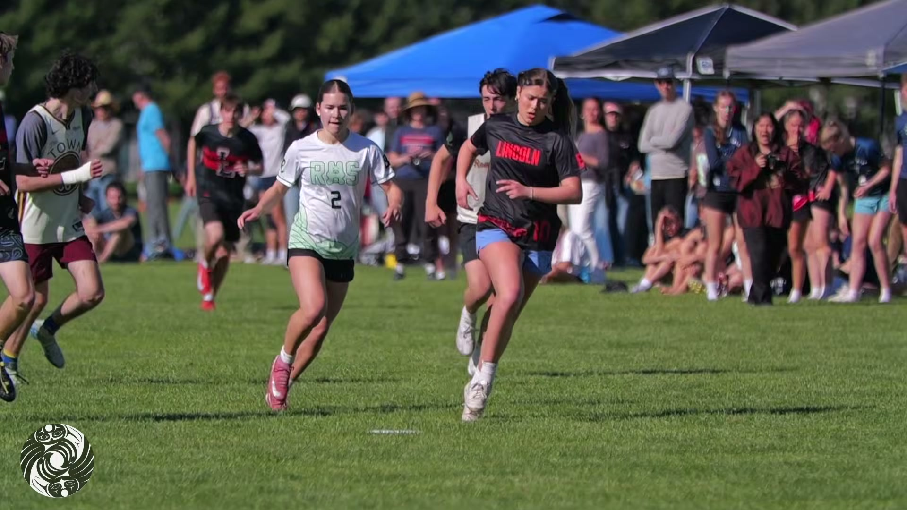
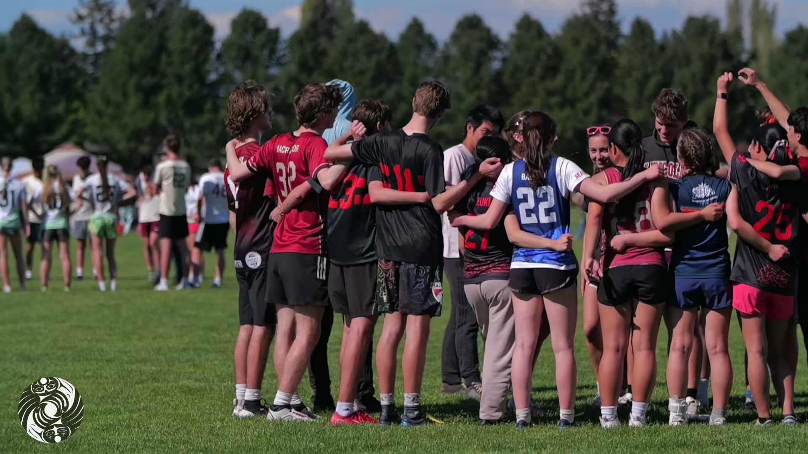

Players
Find your next game.
Hat leagues, team leagues, beach tournaments — year-round, rec through competitive. Pick a season and a division; we'll handle the roster.
Browse leagues & registerDiscNW website redesignDirection 13 of 19Prepared for Matt & the DiscNW board
The current brand, evolved. Keep the navy members trust; modernize everything around it with sky, space, and one graphic idea — a single gold arc, the flight of a disc, drawn once across the hero and echoed nowhere except link underlines.
02 · The idea
Over 10,000 players a year already know DiscNW navy — it's on their schedules, their registration receipts, their league emails. This direction keeps that navy as the anchor and rebuilds everything around it: generous white space, clean full-color photography, and interface polish at the level of a product people use every week, because that's what this site is.
The one new idea is the flight path — the long hyzer arc of a thrown disc — drawn once, in gold, across the homepage hero. It appears again only as the underline that grows beneath links. That's the whole system: one line, two scales, total discipline. It's the direction that can ship page by page next to the existing registration tools, and the easiest for the board to say yes to.
03 · Color
Two colors carry over from the current brand untouched. Above them, a tier of skies — pale morning through clear midday — and one sunrise gold, reserved for exactly two things: the arc, and the primary call to action. Photos carry their own color; nothing tints them.
04 · Typography
Sora brings just enough geometric character to feel new without shouting; Inter is the proven workhorse for schedules, rosters, and registration forms. The scale is deliberately steep — one enormous display voice, then a fast drop to working sizes — so every page has exactly one loud moment.
Sora
Display & headings · weights 600–800 · tight tracking at large sizes
Inter
Body & UI · weights 400–700 · built for interfaces and small sizes
An Ultimate community without barriers.
Hat leagues accept individual registrations — you sign up alone, and we draw teams from a hat. It's the fastest way into the community: by week two you have fourteen new teammates, and by playoffs you have a sideline that knows your name. Sliding-scale fees mean every registrant gets the same season.
05 · Signature element
The long, smooth hyzer arc of a thrown disc, in gold, three pixels thin. It crosses the homepage film exactly once — entering low on the left, riding the sky of the frame, and landing on the right like a throw finding its receiver — and it echoes in exactly one other place: the underline that grows beneath links. No dividers, no gauges, no watermarks. A signature stays a signature by refusing to become a pattern.
1 · The hero. Drawn once, left to right, as the last beat of the homepage's load sequence — after the film settles, never before. Reduced-motion visitors see it already landed.
2 · Link underlines. The same curve, 44 pixels wide, grows under a link on hover and focus. That's the entire echo.
Gold, curved, and only under things you can click — which quietly teaches visitors that gold means "go." Everything else on the page holds still so this one line can mean something.
06 · Homepage hero
Type leads on clean white; the Spring Reign film plays below it, full color, untouched. The homepage assembles in one buttery pass — status bar, nav, headline, film, sixty milliseconds apart on a single easing curve — and the gold arc draws across the film last, then everything holds still. Members land on a site they recognize: the same navy, the same "register" verb, just with air under it.
Field status · Fri May 22Magnuson Park — open, games onWeather hotline (206) 781-5840
Ultimate across Puget Sound · Seattle-based 501(c)(3)
DiscNW runs leagues, camps, and tournaments for more than 10,000 players a year — from a kid's first pull at Summer Youth Ultimate Camps to your twentieth Potlatch.
07 · Audience pathways
Players, coaches, parents — each lands on a door labeled in their own language, two clicks from what they came for.

Hat leagues, team leagues, beach tournaments — year-round, rec through competitive. Pick a season and a division; we'll handle the roster.
Browse leagues & register
The Coaching Collective gives you practice plans, season curriculum, and a community of coaches — plus one checklist that covers every certification.
Start the coaching checklist
Non-contact, self-officiated, built on respect. Learn the sport in five minutes, sign waivers in one sitting, and pay what your household can.
Read the parent guide08 · Storytelling
Community stories, impact numbers with a human line under each, and a season you can see end to end — the narrative layer the current site is missing.
"My first layout was at Spring Reign. I missed the disc — and my whole team ran over like I'd scored. That's when I knew I wasn't quitting."
Maya, 13 · Fall Middle School Leagues · submitted by her mom

Summer Mixed Hat League, from signup to spirit circle — so new players and parents know exactly what they're stepping into.
09 · UI components
Buttons, an event card, and a league finder — the pieces staff will actually reuse. Gold appears only on the primary action and leans up to six pixels toward your cursor; capacity reads as a plain, honest bar; nothing pulses.
10 · Voice & tone
The voice members already trust, tuned: active, specific, never precious. It sounds like the person at the fields who hands you a disc and points you to your team.
Your season starts here.
You're on the roster for Summer Mixed Hat League. First pull is Monday, June 1 at Magnuson Park — your schedule lives under your name, top right, same as always.
Ultimate is non-contact and self-officiated, and nobody expects your kid to know a huck from a hat league on day one. Send cleats, water, and a lunch — we'll take care of the rest.